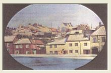
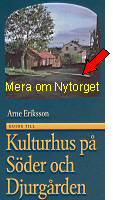
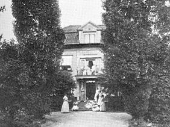
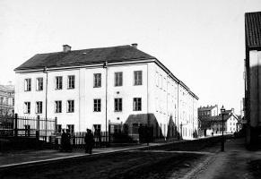
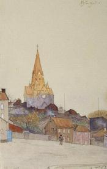
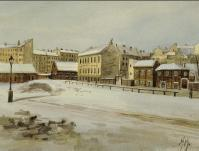
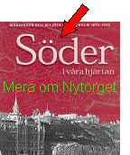
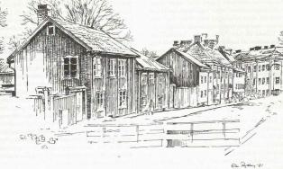

|
Nytorget
Ur Stockholmsliv, Staffan Tjerneld, PA Norstedt & Söners förlag, 1950
Söders öppna platser har aldrig haft något verkligt torgliv - det har förut påpekats - och Nytorget
skiljer sig på den punkten inte från de övriga. Förr var torget en hopplöst ödslig fyrkant, nödtorftigt belagd med kullersten och omgiven av inte särskilt märkliga byggnader. Nu är Nytorget en
park med plaskdamm och med Bror Hjorths skulptur »Lek» som centrum. Inte heller har några
händelser av vikt passerat på Nytorget och det är först på senare år som platsen blivit värd
uppmärksamhet; vid torgets östra sida finner vi en samling hus från 1700-talet och det tidiga
1800-talet som tillsammans med den gamla bebyggelsen i sluttningen av Vitabergsparken efter
nuvarande Malmgårdsvägen bildar det kanske mest lyckade av de kulturreservat som skapats på
Söder.
|
Det har ofta påpekats att Söders »kåkar» i och för sig inte har något större kulturellt värde,
det är endast som miljö och som påminnelse om den gamla stadsbilden de förtjänar att bevaras.
Dessa krav uppfylls i ovanligt hög grad här vid Nytorget;
|
|


|
|
Vitabergsparken bildar den fond av
grönska som sådana här trähus alltid måste ses mot eftersom den var en så viktig del av
stadsbilden på den tid då husen byggdes.
Små röda eller gula gårdar kvarlämnade mellan höga
hyreshus, vilket man kan finna på andra håll, är ett diskutabelt utslag av pietet, ett arrangemang
|
|
där det förgångna har liten möjlighet att hävda sig gentemot nutiden.
För att förstå den gamla bebyggelsen vid Nytorget och Malmgårdsvägen måste man emellertid veta, att
den breda vägen ner mot Hammarbysjön var den gamla vinterförbindelsen med Värmdö, något som
också framgick av det äldre och riktigare namnet Värmdögatan.
Ett ännu tidigare namn var
Stadsträdgårdsgatan. Inte långt från den ursprungliga sjöstranden i hörnet av nuvarande
Ljusterögatan låg ett tullhus, Vintertullen, och därifrån gick den med ruskor utmärkta vägen ut över
isen. Hammarby sjö var grund och frös tidigt och åtminstone under fem av årets månader var detta skärgårdsbornas glada väg från mörkret och stormen
in till Götgatans och Hornsgatans många varma och livliga krogar. Numera ändar gatan i Hammarbyhamnens kolupplag och magasin, den har alltså fortfarande en uppgift i stadsförsörjningen, även om
livet på gatan ter sig mindre pittoreskt.
|
|

|
|

Verner Groens malmgård
|
|
Ett par äldre hus längs Malmgårdsvägen bör man titta närmare på. Det ena är Verner
Groens gamla malmgård i nummer 53, som ligger inbäddad i djup och verkligt 1700-talsmässig grönska
och vars trädgård har kvar sina gamla mått, vilket är ovanligt i den inre staden. Den snart
tvåhundrafemtioåriga gården, som efter en restaurering bebotts av ett av stadens borgarråd, har
bevarat något av det aristokratiska från den aktade vinhandlaren Verner Groens dagar och skiljer sig
märkbart från de små enkla stugor som i övrigt ligger utspridda på Vitabergsområdet.
|
|
Ett annat hus värt intresse är stenhuset mot Malmgårdsvägen på folkskolans stora tomt, något som
man knappt kan säga om skolans fula huvudbyggnad från 1900-talets första år. Det är möjligt att fortfarande en del äldre Söderbor vet vad Malongen är, på (18)70- och 80-talen hette det gamla skolhuset
nämligen ingenting annat. Namnet kom från en av ägarna på 1700-talet, fabrikör J. K. Madelung, som
här drev klädestillverkning som ett led i textilindustrin vid Hammarby sjö. Huset är alltså en av
Stockholms äldsta fabriksbyggnader.
Mycket hade inte heller gjorts för att få byggnaden lämplig för skolbruk då Söderbarnen en gång
skickades dit, den hade fortfarande fabrikskaraktär.
|
|

Värmdögatan 46, Malongen, förr sidenväveri och folkskola, byggt på 1700-talet. Här låg Katarina södra folkskola även innan byggnaden vid Katarina Bangata uppfördes. Bilden är tagen från söder år 1909.
|
Ur En bok om Stockholm, Per Anders Fogelström, 1978

|
|
Det är något lurt med Nytorget ...
Namnet låter antyda att det kan vara en plats med kort historia, synintrycket ger känsla av oas och
idyll. Turistguider och uppslagsböcker ger få eller inga upplysningar och understryker därmed
intrycket av stillsam utkant. I Elers' Stockholm (1801) får man t.ex. bara veta att torget "är i senare
tider inrättat", 200 alnar långt och 120 alnar brett samt "för det närvarande illa bebyggt och med plank
avstängt, till nederlagsplats för orenlighet, lika som Packaretorget på Norremalm. På detta torg är ett spruthus".
|
Men det idylliska skenet bedrar.
Nytorget användes ibland som bestraffnings- och avrättningsplats. Om kungamördaren
Anckarström berättas att han här hade sin svåraste "station" på lidandets väg mot galgbacken.
1794 bildade Nytorget scen för ett drama med lyckligare slut. Den i "armfeltska
sammansvärjningen" inblandade J. A. Ehrenström fördes ut för att avrättas och stora åskådarskaror
hade samlats. Bödeln stod redo med sin bila - och så kom plötsligt meddelandet att den dömde
benådats till livstids straffarbete (sex år senare hade han återvunnit friheten, äran och adelskapet).
I oktober 1801 rasade en svår brand vid Nytorget och omkring femtio hus brann ner. Bland dem
som deltog i släckningsarbetet var Årstafruns son och den dagboksskrivande mamman berättar att
sonen sjönk till midjan i dyngan och smutsen på det gropiga torget. Senare anordnades ett
fyrverkeri till förmån för brandoffren. 1855 härjade en annan svår brand, då utgav man en dikt om
Engelbrekt som såldes "till förmån för de brandskadade vid Nytorget".
|
|

|
Länge ledde smala spångar av trä över det gropiga och smutsiga torget. Småningom förvandlades
spruthuset till saluhall. Intill hallen stod "Hundgubben" som kokade och sålde hundmat och födde
upp hundar i en av träkåkarna vid torget.
På västsidan av torget öppnades en teater i ett nybyggt hus. 1917 kallades stället "Den glada laxen"
och bland de många okända förmågor som uppträdde där var en dansk pojke som kallades Lille
Caruso men hette Max Hansen.
|

Nytorget 37-41, Henrik Reuterdahl, akvarell, 1889. Vinterbild av Nytorget mot NO. Till höger kvarteret Bondesonen Större med flera trähus.
|
|
Samma år fylldes torget av uppretade kvinnor som krävde att få
inventera speceriaffärernas potatislager. "Potatiskriget" slutade i kravaller med stenkastning, beridna
poliser med sablar - och ett tjugotal arresterade amasoner. Några potatisar fick man inte,
det blev att fortsätta att koka kålrötter och foderbetor.
1935 avtäcktes Bror Hjorths lilla skulptur Lek.
Samma år beslagtog polisen fyra av konstnärens utställda skulpturer på "Färg och Form" sedan en
grosshandlare funnit dem sårande för tukt och sedlighet.
|
Om man går Malmgårdsvägen från Nytorget till Renstiernas gata, kan man finna ett plank som
spärrar det som en gång var en grändmynning, uppifrån berget eller husen omkring kan man ännu
ana var gränden gått fram mellan de kåkar som ligger kvar.
Gränden hette Färgargränd och det var en gång ett för trakten typiskt namn.
|
|

|
|

|
|
Nygammalt
Nytorget är avstängt från genomfartstrafik och ligger avspänt och dåsar på söndagseftermiddagen när jag
sitter och tecknar av platsens nyrestaurerade kulturhus. De senaste dagarnas plötsliga snövinter har lika
hastigt bytts mot ljuva tövindar, så att smältvattnet porlar i den park som kartan kallar torg.
Himlen är vårljus, men solen håller sig bakom en vit molnridå. Från Vitabergsparken hörs en talgoxes
glada titå titå överrösta en tung, dyster klockklang från Sofia kyrka. En församlingsbo vigs till den sista
vilan.
|
|
De pittoreska husen i det gamla, nu kulturskyddade, kvarteret Bondesonen Större står fräscha och fina
som i bästa gåbortskostym. Några äldre människor har ärende till kiosken för att köpa kvällstidningen. På
en parksoffa sitter en ensam mamma med barnvagn.
Familjebostäder, som står för upprustningen av kvarteret, har avlägsnat alla associationer till fattigdomen som här en gång fanns, tänker jag. Tiden har hunnit långt förbi den socialt verksamma Elsa Borgs
härnadståg mot eländet på 1800-talet.
Skånegatan kantas av nedstänkta parkerade bilar. Ett reaplan brakar förbi däruppe under himlen och drar
ett grovt steck över stillheten.
|
|

|
Ingen med sinne för realiteter önskar sig tillbaka till sekelskiftets Söder. Men nog föreställer jag mig att
det då var mera liv och rörelse här bland kåkarna kring Nytorget, oavsett om det var söndag eller inte.
Hästdragna vagnar på järnskodda hjul, grabbar med dragkärror, kvinnor med ok över axlarna bärande ämbar med
vatten från brunnen. Ungar som skriker på sina mammor och mammor som hojtar efter sina ungar. Gubbar på
snusen. Doft av bränd tjära från spisbrasor Hästar som klapprar fram, lämnande middagsmål på gatan åt
tjattrande gråsparvar. Randiga bondkatter på råttjakt. Förstugor som luktar ruttna päron och svett ...
Det var här på torget som de beryktade potatiskravallerna utspelades i april 1917 under första
världskrigets svältår. Det var inget bygdespel likt ett modernt amatörskådespel som vällde fram över
scenen, utan rena rama oregisserade verkligheten.
Tillbaka till nuet. Några karlar i karriäråldern, men bortom all karriär, stannar upp bredvid mig, ointresserade av
vad jag sysslar med. - Harusett några killar? - Killar? Vad då för killar, undrar jag. - Känner du ingen hjälpare i
nödens stund? ... Söndagstorka, jakt efter langare ... Elsa Borg, var är du?
|
|